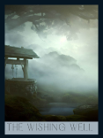
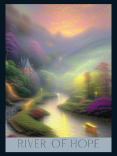
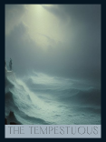
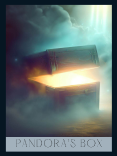

ALL PATHS' END: Disastrous
The "All Paths' End" card signifies a conclusion marked by significant
challenges or failures. It warns of potential pitfalls and advises
caution in your endeavors. This card suggests that it might be time to
reevaluate your path and consider alternative strategies to avoid
disaster.
HERO'S JOURNEY: Hopeful
The "Hero's Journey" card embodies hope and perseverance. It indicates
a time of embarking on a significant quest or mission. This card
encourages you to stay hopeful and resilient, as the journey ahead,
while challenging, is filled with potential for growth and triumph.
THE WISHING WELL: Neutral

The "Wishing Well" card represents a neutral state, where outcomes are
not yet determined. It suggests that your desires and aspirations are
being considered by the universe, but the results will depend on your
actions and intentions. It's a reminder to stay balanced and patient.
RIVER OF HOPE: Optimistic

The "River of Hope" card is a symbol of optimism and positive flow. It
suggests that your current path is aligned with positive energies and
that maintaining an optimistic outlook will help you navigate through
any difficulties. Trust in the natural flow of events and stay
hopeful.
THE TEMPESTOUS: Pessimistic

The "Tempestuous" card indicates a period of turbulence and
uncertainty. It reflects a pessimistic outlook and advises caution.
While challenges may seem overwhelming, this card reminds you that
storms are temporary and encourages you to seek calm and clarity
amidst the chaos.
PANDORA'S BOX: Unexpected

The "Pandora's Box" card represents the element of surprise and the
unexpected. It suggests that unforeseen events may unfold, bringing
both challenges and opportunities. This card encourages you to stay
adaptable and open-minded, as unexpected changes can lead to new
possibilities.